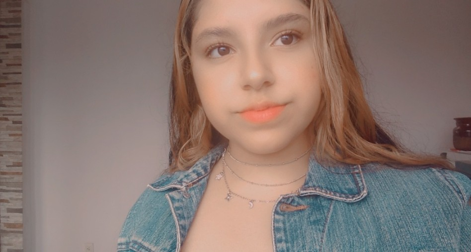

CURRICULUM

HOBBIES
PROBLEMAS
ALGORITMOS
DATOS PERSONALES
Nombre: Zurisadai Muñoz Vilchis
Edad: 16 años
Correo: zmunozv1900@alumno.ipn.mx
NSS: 12030430956
ESCOLARIDAD
Secundaria: Diurna No.148 "Lao-Tse"
Media superior: CET 1 "Walter Cross Buchanan" y CECyT 9 "Juan de Dios Bátiz"(Actualmente)
Año de ingreso (secundaria): 2016 Año de egreso: 2019
Taller o Carrera Técnica: Mecanografía y Electricidad
Logros: Ganar un concurso escolar de Baile como 2do lugar.
CURSOS, CERTIFICADOS O DIPLOMAS
Certificado de Primaria
Certificado de Secundaria
13 Diplomas Por aprovechamiento del ciclo escolar (Desde la primaria hasta la secundaria)
HOOBIES
Jugar videojuegos
Leer libros
Consumir contenido de BTS (de cualquier tipo)
Leer poesía
Escribir poesía
Pasear en bicicleta
Ver Películas
Ver series, doramas y animes
Pasar tiempo de calidad con mi familia y amigos
Escuchar música (sobre todo música clásica, jazz, kpop, pop, rap, hip hop, R&B)
Hacer ensayos sobre cosas que encuentro interesantes
Ver documentales
Aprender coreano
HABILIDADES
Liderazgo
Actitud positiva
Adaptabilidad
Relaciones interpersonales
Integridad
Empatía
Pensamiento crítico